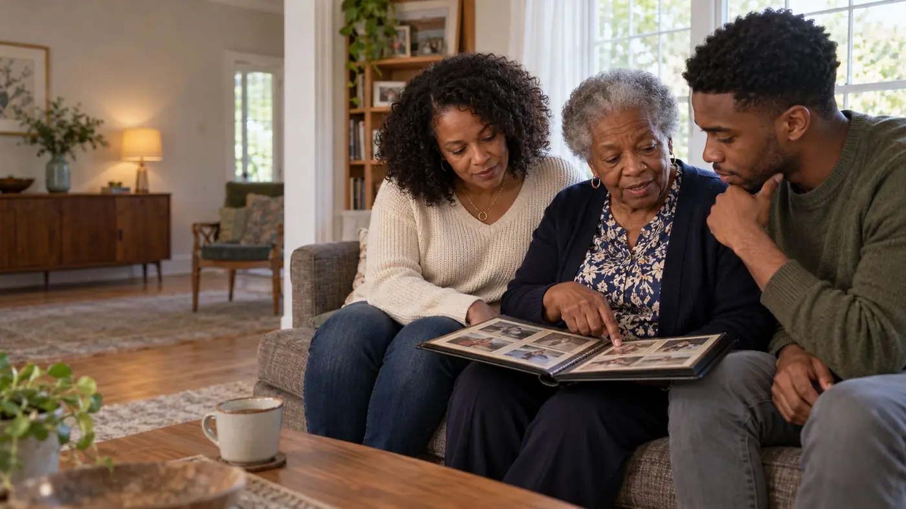
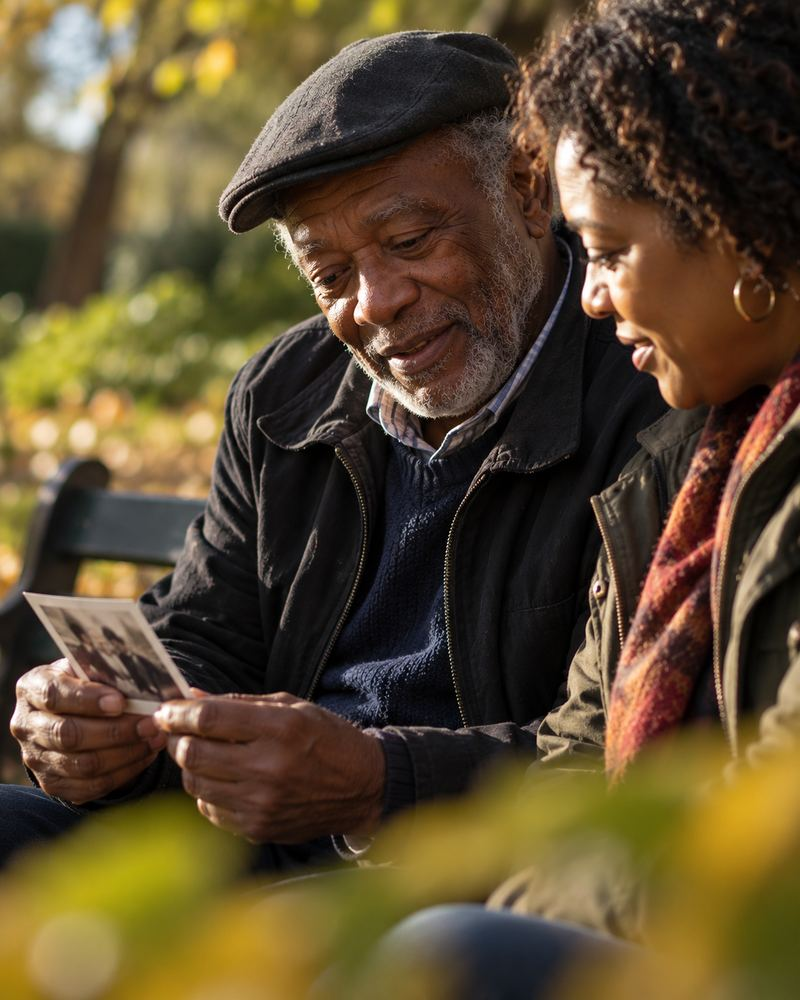
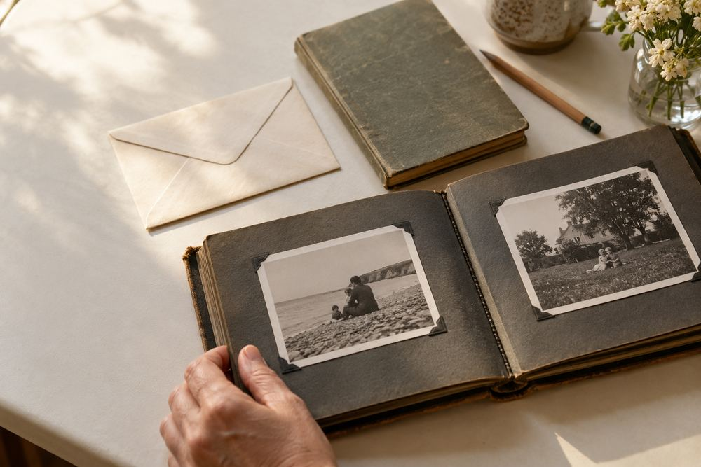
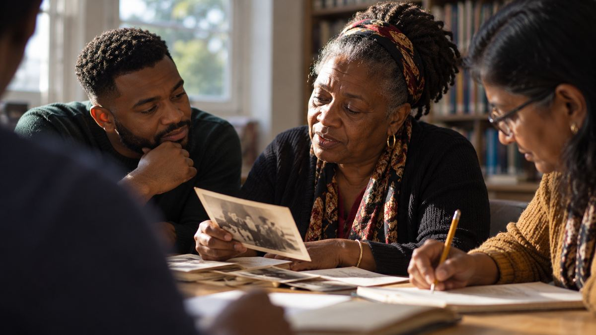
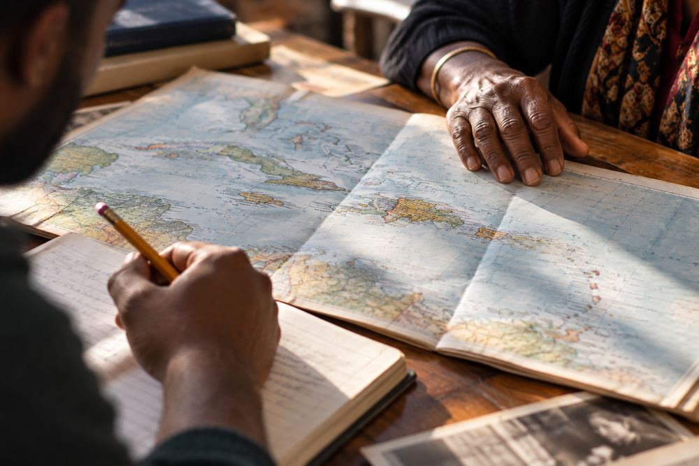
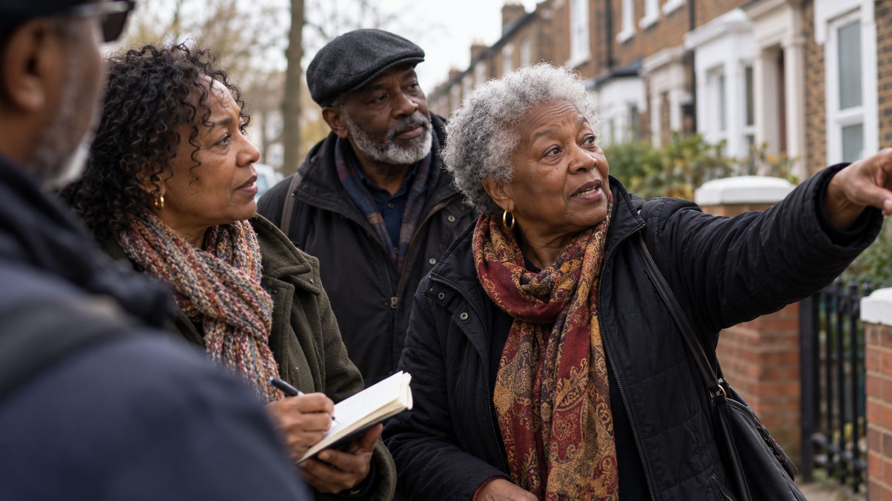

14 October 2026 · Research
Tracing ancestors back to the period of slavery
Where the usual records stop, and how slave registers and estate papers can take you further back.
Read the storyWe’re a volunteer group helping people trace families from Jamaica, Barbados, Trinidad, St Kitts and Nevis and right across the Caribbean. We meet on the last Saturday of the month at Solihull Core Library and on Zoom.
Members join us from across the UK, the USA, Jamaica and Trinidad.
Next meeting Saturday 31 OctoberSolihull Core Library and Zoom


We’re like-minded people who enjoy family history. Some of us have been researching for more than forty years; some of us started a few months ago. A few of us are experts in a particular island or in military records.
We’re all still learning, so we share what we find. Bring a name, a photograph or a question, and someone at the table will usually know where to look next.
Members join us from across the UK, the USA, Jamaica and Trinidad.
About the group
Your first visit is free
Our AGM takes place every May.

You don’t need a subscription or any experience. You need a notebook, some patience and the people in your family who remember.
Start with yourself, then your parents and grandparents. Names, dates, places, and any certificates you have at home.
Ask about names, villages, churches and nicknames, and how the family came to Britain or wherever they settled.
Put everything on a pedigree chart so you can see what’s missing. Our charts are free to download.
Many Caribbean church registers are free on FamilySearch, and every Solihull library gives free access to its digitised collections.
When you get stuck, come to a meeting. Someone in the room has usually been stuck in the same place.
Every island kept its records differently, so where you start depends on where your family came from. Each guide covers the key records, the archives, what you can search online and who in the group knows that island best.


Between us we cover Jamaica, the other islands and military records. Tell us who you’re looking for and what you’ve tried so far, and we’ll pass your question to the person best placed to help. We’re all volunteers, so a reply can take a little while.
Ask a research question
Come to a meeting first and see if we’re for you. Membership is paid through the Family History Federation. Our AGM is held every May, and committee roles open up each year if you’d like to get more involved.
Our meetings happen at Solihull Core Library. At our request it became a FamilySearch affiliate in 2011, and every Solihull library now gives free access to FamilySearch’s digitised records.
Why Are West Indians in this Country. We have worked alongside each other since around 2010 and host the Windrush Dinner and Dance together every June.
We are a member society of the Federation, which promotes family history research and handles our membership payments.